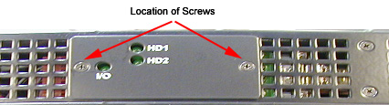
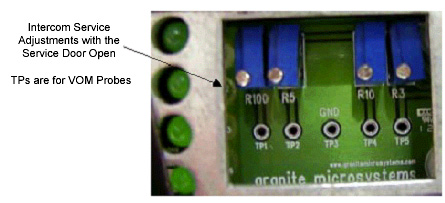

Operating Documentation
Direction 5114043-800, Rev# 9
LightSpeed 3.X Service Methods (Advanced)
Operating Documentation |
| Last Revised: | August 2004 |
The Intercom block enables communication between the console operator and the patient on the table. The communication direction through the Intercom can be switched by depressing the TALK button on the SCIM keyboard. The operator can speak to the patient by depressing the TALK button (ON). When the TALK button is released (OFF) the operator can then listen to the patient.
When Auto-voice is playing, the operator can listen through the Console speaker on the Auto-voice R channel while the TALK button is released (OFF). At the same time the patient can listen through the Gantry speaker on the Auto-voice L channel.
If the operator depresses the TALK button (ON) while Auto-voice is playing, the Intercom will disable the Auto-voice sound and will switch the sound source to the Console microphone output. The Console microphone output is amplified and routed to the Host computer's audio input for the Auto-voice recording. The Auto voice recording will be managed by the host computer's software. It will be up to the software to start and stop recording the sound.
The Intercom board is located in the SDDA module.
| DO NOT open this module. All adjustments are made on the front. | |
To gain access to the potentiometers, remove the two + head screws shown below.
Illustration 1: Location of Screws

| Potentiometer | Adjustment |
| R3 | 2.0k ohms normal at TP5 and TP 3 Console Max Volume adj. CCW = MAX vol. |
| R5 | 1.5k ohms normal at TP 2 and TP 3 Gantry Max Volume adj. CCW = MAX vol. |
| R10 | 500 ohms normal at TP 1 and TP 3 Gantry Min Volume adj. CCW = MAX vol. |
| R100 | 150k ohms normal at Auto Voice Detect delay adj. CCW = MAX delay |
Illustration 2: Intercom (ICPT) Block Diagram

| NOTE: | For a larger, PDF version of the above diagram, click on the icon below: |
Media File 1: Intercom (ICPT) Block Diagram

Illustration 3: Intercom Service Adjustments (Door Open)
